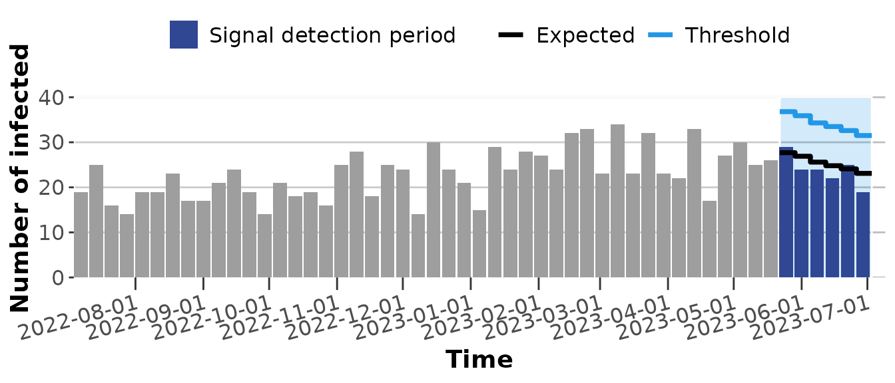
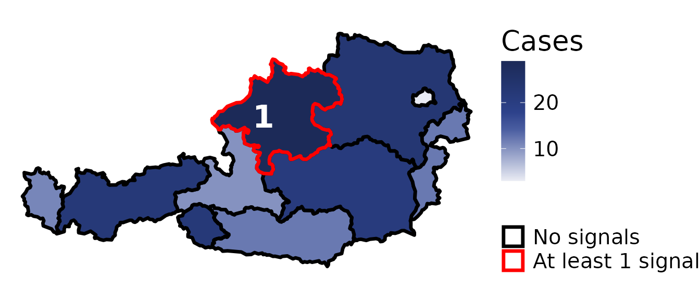
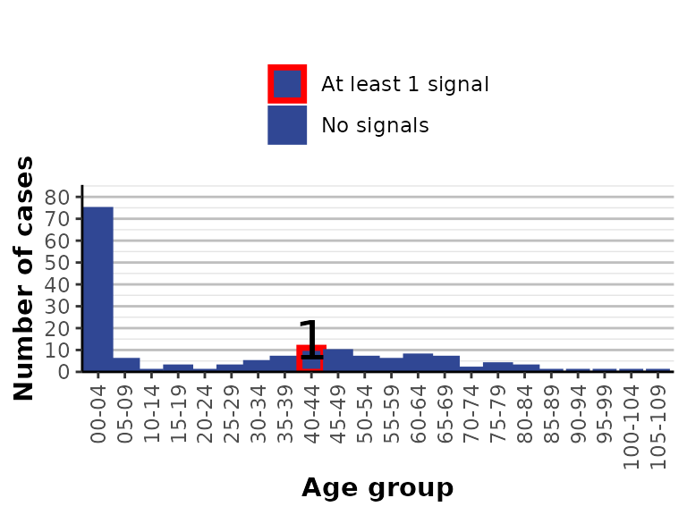
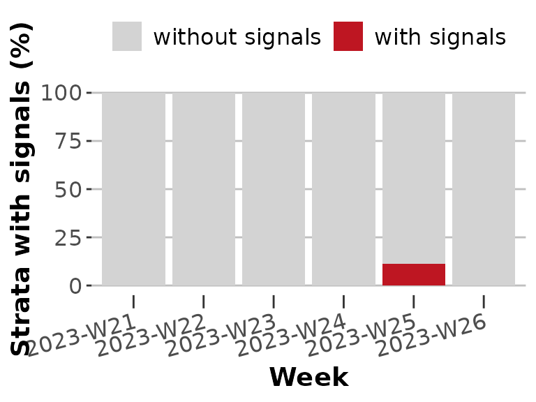

SignalDetectionTool: R Package for signal detection on infectious disease surveillance data
SignalDetectionTool.RmdThe SignalDetectionTool (SDT) is an R package which contains an R shiny app to perform signal detection on infectious disease surveillance data and visualise results. Furthermore the functions of this R package can also be used standalone without running the shiny application. This vignette gives guidance on how to use the functions within the R package.
Running the App
This section is extensively described in the README of the package thus we give minimal instructions here. First install and load the SDT package.
Run the app entering the following command in the console.
run_app()It is possible to run the app with customised settings using a yaml file. Please have a look at the README.
Using functions from the SDT
Data
The input to the SDT is a linelist of infectious disease cases
structured according to the format defined in
input_metadata. A sample linelist
(input_example) and its corresponding metadata
specification (input_metadata) is available in the package
as internal datasets and can be accessed using:
Applying signal detection
To apply signal detection to your data for the most recent 6 weeks
you first need to preprocess your linelist and then apply
get_signals(). Inside get_signals() the
linelist is aggregated to a timeseries containing weekly counts of
cases.
To apply different signal detection methods use the parameter method. To
generate stratified signals use the parameter stratification. Please
have a look at the function documentation for more details. This is an
example for signals generated using the default parameters with
FarringtonFlexible and no stratification:
data_prepro <- input_example %>% preprocess_data()
signals <- data_prepro %>% get_signals()The generated signals output is a data.frame containing
the aggregated number of cases per time unit with additional columns
cases_in_outbreak, alarms,
upperbound, expected, category,
stratum, method and
number_of_time_units.
-
cases_in_outbreakis only generated if the columnoutbreak_statuswas available in your provided linelist. It counts how many cases in this week were already part of a known outbreak.
-
alarmsis a column with booleans indicating for which weeks a signal has been generated. Of course the majority of time units in the aggregated timeseries containNAin this column as only the most recent selectednumber_of_time_unitsare filled withTRUEofFALSE.
-
upperboundcontains a numeric threshold calculated with the signal detection methods. As foralarmsthe majority of time units in the aggregated timeseries containNAas this is only calculated for thenumber_of_time_unitsfor which signals are generated. Furthermore some algorithms such as EARS do not calculate a threshold.
-
expectedis a numeric value giving the expected number of cases by the signal detection algorithm. Only filled for the weeks for which signals are generated.
-
categoryCharacter string specifying to which stratum timeseries belongs to when having added stratification parameters (more details in the next example). For unstratified timeseries it isNA.
-
stratumCharacter string specifying to which category of the stratum the timeseries belongs to when having added stratification parameters (more details in the next example). For unstratified timeseries it isNA.
-
methodCharacter string specifying the signal detection method which was used. -
number_of_time_unitsInteger specifying the number of time units (e.g. weeks) for which signals were generated.
Generating stratified signals using EARS:
data_prepro <- input_example %>% preprocess_data()
signals_ears_stratified <- data_prepro %>% get_signals(
method = "ears",
stratification = c("age_group", "county")
)The signals_ears_stratified output is a data frame in
long format, containing multiple time series of weekly aggregated case
counts. Each time series corresponds to a unique combination of the
specified stratification variables, with all strata stacked
vertically.
The columns category and stratum identify
the individual timeseries. In this example we obtain the following
values:
* category is filled with the column names provided in the
stratification parameter.
* stratum with the values of these variables.
In this example we obtain:
* category is filled with “age_group” and “county”
* stratum contains “00–04”, “05–09”, “10–14”, “15–19”,
“20–24”, “25–29”, “30–34”, “35–39”, “40–44”, “45–49”, “50–54”, “55–59”,
“60–64”, “65–69”, “70–74”, “75–79”, “80–84”, “85–89”, “90–94”, “95–99”,
“100–104”, “105–109” for rows with category == "age_group".
For rows with category == "county" the values of
stratum are “Burgenland”, “Kärnten”, “Niederösterreich”,
“Oberösterreich”, “Salzburg”, “Steiermark”, “Tirol”, “Vorarlberg”,
“Wien”.
Create visualisations and tables
To visualise signal detection in your data for the most recent
number_of_time_units, you first need to preprocess your
linelist and then apply get_signals(). To display
aggregated signal detection results, first aggregate the signals. In the
final step, apply a function to generate either a plot or a table. The
plotting functions support both interactive and static outputs; by
default, static plots are generated. Tables are returned as interactive
DataTables by default, with options to convert them to data.frame or
flextable formats.
The following example shows how to visualise the time series of
detected signals using the default parameters of FarringtonFlexible
without stratification in plot_time_series():
data_prepro <- input_example %>% preprocess_data()
signals <- data_prepro %>% get_signals()
signals_time_series <- signals %>% plot_time_series()
signals_time_series
In the time series visualisation, the detection period is shaded in blue. The expectation is shown as a black line. The threshold is indicated by a blue line. Weekly case counts are displayed as bars. A signal is generated for a given week when the number of cases exceeds the threshold.
To create an interactive or a non-interactive map you have to use
aggregated signals and an appropriate shapefile in a combined sf-object
which is used in plot_regional(). This is an example for
visualising the specified data as a non-interactive map while using
“county” as stratum and the internal European shapefile
(nuts_shp).
data_prepro <- input_example %>% preprocess_data()
signals <- data_prepro %>% get_signals(stratification = c("county"))
signals_agg <- signals %>% aggregate_signals(number_of_time_units = 6, time_unit = "weekly")
nuts_shp <- nuts_shp %>%
sf::st_as_sf() %>%
dplyr::filter(LEVL_CODE == 2 & CNTR_CODE == "AT") %>%
dplyr::select(NUTS_NAME, geometry)
shape_with_signals <- nuts_shp %>%
dplyr::inner_join(
signals_agg,
by = c("NUTS_NAME" = "stratum")
) %>%
sf::st_as_sf()
signals_map <- plot_regional(
shape_with_signals,
signals_agg_unknown_region = data.frame(),
interactive = FALSE,
toggle_alarms = FALSE
)
signals_map
In the non-interactive map visualisation, the number of cases per region is represented by the shade of blue, with darker shades indicating higher case counts. Regions without signals are shown with a black border. If at least one signal occurs in a region, the border is coloured red and the number of signals is displayed as a label within the region.
To create an interactive or a non-interactive barplot you have to use
aggregated signals in plot_barchart(). This is an example
for visualising the specified data using “age group” as
stratum and for the non-interactive plot using
plot_barchart():
data_prepro <- input_example %>% preprocess_data()
signals <- data_prepro %>% get_signals(stratification = c("age_group"))
signals_agg <- signals %>% aggregate_signals(number_of_time_units = 6, time_unit = "weekly")
signals_barchart <- plot_barchart(
signals_agg,
interactive = FALSE
)
signals_barchart
In the non-interactive barplot visualisation, the number of cases is represented by the height of the bars. If no signal occurs in a given stratum, the bar has no border. If at least one signal is detected, the bar is outlined in red. For non-interactive plots, the number of signals is additionally displayed as a label above the bar.
To create an interactive or a non-interactive 100% stacked barplot
showing a week-to-week representation of strata levels that had alarms
you have to use signal data and specify the number of stratification
levels in plot_signals_per_time_unit(). This is an example
for visualising the specified data using “county” as
stratum with 9 levels for the non-interactive plot:
data_prepro <- preprocess_data(input_example)
signals <- get_signals(
data_prepro,
stratification = "county"
)
n.strata <- 9
signals_week_barchart <- plot_signals_per_time_unit(
signals,
n_strata = n.strata
)
signals_week_barchart
In the non-interactive 100% stacked barplot visualisation, the proportion of levels with alarms per week is represented by the height of the red segment of each bar. If no signal occurs in a given week, the bar is shown entirely in grey.
To create a signals detection results table with different formatting
options you can use build_signals_table(). This is an
example for creating a DataTable using age_group as stratum
and default options:
data_prepro <- input_example %>% preprocess_data()
signals <- data_prepro %>% get_signals(
stratification = c("age_group"),
number_of_time_units = 6
)
signals_table <- signals %>% build_signals_table()
signals_tableTo create an aggregated signal detection results table with different
formatting options you can use build_signals_agg_table().
This is an example for creating a DataTable using age_group as
stratum and default options:
data_prepro <- input_example %>% preprocess_data()
signals <- data_prepro %>% get_signals(
stratification = c("age_group"),
number_of_time_units = 6
)
agg_signals <- signals %>% aggregate_signals(number_of_time_units = 6, time_unit = "weekly")
agg_signals_table <- agg_signals %>% build_signals_agg_table()
agg_signals_tableIn the table, rows with a signal are highlighted in red.
Run the report
Single-pathogen reporting
You can directly generate an HTML or Word report containing signal
results and visualizations using run_report(). Simply pass
your surveillance linelist—structured according to the format defined in
input_metadata—to run_report(). The data will
be preprocessed automatically within the function. The following code
chunk generates a Word report using EARS without any stratification
(default) for the past six weeks (default):
run_report(input_example,
report_format = "DOCX",
method = "EARS"
)This generates an HTML report (default) with stratification by age group, county and sex for the last 2 weeks using FarringtonFlexible (default):
run_report(input_example,
strata = c("age_group", "county", "sex"),
number_of_time_units = 2
)Multi-pathogen reporting (HTML)
The following functionalities are currently only available for HTML
reports. They are not supported in Word (DOCX) format. The package also
supports generating a single HTML report for multiple pathogens.
To use this functionality, you must provide a line list that includes
cases from different pathogens.
An example line list is available in the package as an internal
dataset: input_example_multipathogen.
You can access it with:
data("input_example_multipathogen")To run an HTML report with the EARS algorithm and stratification by age_group and county for all pathogens in the line list you can run:
run_report(input_example_multipathogen,
strata = c("age_group", "county"),
method = "EARS"
)If you want to generate a report for a subset of pathogens in your linelist you can specify these using the pathogens parameter:
run_report(input_example_multipathogen,
pathogens = c("Enterobacter", "Salmonella"),
strata = c("age_group", "county"),
method = "EARS"
)In addition you can customise the HTML report by replacing the default United4Surveillance logo in the top right corner with your own logo. To do this, provide the path to a .png or .svg file using the custom_logo parameter.
run_report(input_example_multipathogen,
pathogens = c("Enterobacter", "Salmonella"),
strata = c("age_group", "county"),
method = "EARS",
custom_logo = "path/to/my/custom_logo.png"
)